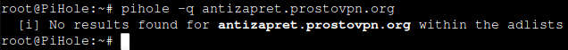

| Ник | Пост | Дата |
|---|---|---|
| Listum(Listum) | Браузерное расширение. Firefox. Поставил у себя в сети PiHole. Перестало работать AZ расширение, но сам сайт открывается. Какие DNS записи создать, чтоб всё заработало как надо? Или причина в чем-то другом? | 2023-05-19T23:46:42.409Z |
| ilyaigpetrov(ilyaigpetrov) | На каких заблокированных сайтах вы проверяли работоспособность? | 2023-05-20T00:07:57.372Z |
| Listum(Listum) | Само расширение говорит, что оно не может скачать pac скрипты. P.S. Скриншот сделать не смог, поэтому только фотография. | 2023-05-20T00:18:02.584Z |
| ilyaigpetrov(ilyaigpetrov) | Пришлите результат открытия каждой ссылки из списка в конце этого параграфа: Частые проблемы · anticensority/runet-censorship-bypass Wiki · GitHub. | 2023-05-20T00:22:37.393Z |
| Listum(Listum) | 2023-05-20T00:28:40.990Z | |
| ilyaigpetrov(ilyaigpetrov) | Там много ссылок – лучше текстом прислать. | 2023-05-20T00:29:35.564Z |
| Listum(Listum) | Основной сайт загрузился из кэша PiHole. | 2023-05-20T00:30:34.511Z |
| ilyaigpetrov(ilyaigpetrov) | Если Pi Hole временно отключить, то работоспособнасть AZ восстанавливается? | 2023-05-20T00:32:37.666Z |
| Listum(Listum) | Проверил. Да, работоспособность восстанавливается. UPD: При этом ссылки по прежнему не открываются. | 2023-05-20T00:37:14.575Z |
| ilyaigpetrov(ilyaigpetrov) |
На каких адресах вы проверяли? Как насчёт работоспособности https://www.kasparov.ru? | 2023-05-20T00:41:12.034Z |
| Listum(Listum) | Да, работает. PAC скрипты обновились. | 2023-05-20T00:42:47.527Z |
| ilyaigpetrov(ilyaigpetrov) | Т.е. всё заработало с включённым Pi Hole? Я немного запутался. | 2023-05-20T00:45:23.197Z |
| Listum(Listum) | С Pi Hole не работает, т.е. расширение и заблокированный сайт. UPD: Если вам что-то это даст, то я использую Pi Hole в связкес Unbound | 2023-05-20T00:54:31.419Z |
| ilyaigpetrov(ilyaigpetrov) | Возможно, наши домены блочатся на Pi-hole как реклама. | 2023-05-20T01:23:29.699Z |
| Listum(Listum) |  | 2023-05-20T01:24:46.179Z |
| Listum(Listum) | Могу дать вам потенциальную подсказку. При попытке пингануть | 2023-05-20T01:28:58.435Z |
| ilyaigpetrov(ilyaigpetrov) | Загляните в логи Pi Hole сразу после неудачной попытки включить AZ в расширении: | 2023-05-20T01:34:47.743Z |
| ilyaigpetrov(ilyaigpetrov) | Также можно посмотреть логи расширения сразу после неудачной попытки включения PAC-скрипта AZ: см. Как прочитать логи? (для продвинутых) · anticensority/runet-censorship-bypass Wiki · GitHub. Интересны будут http-статус сетевой ошибки или другие детали о ней. | 2023-05-20T01:47:07.904Z |
{kind=link}
{kind=link}
{kind=link}
{kind=link}
{kind=link}